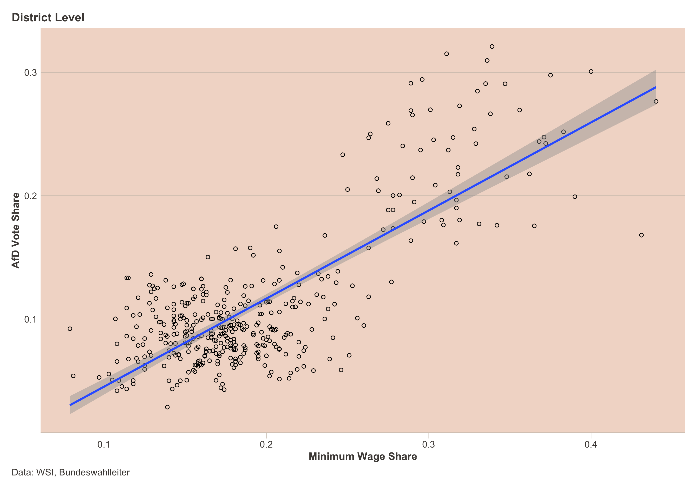

Paycheck Politics
Research Project on the connection between minimum wage recipiency and voting for populist right for a seminar in Empirical Economics. This page presents some findings and visualizations of the resulting seminar paper.
The Code and Data for this project can be downloaded at the GitHub Repo. An online version of the seminar paper is available here with more interactive graphics.
Nestled in the heart of Thuringia, the German district of Sonneberg made headlines with a historic moment – it became the first constituency to elect a district administrator from the right wing Alternative for Germany (AfD) party. In an unexpected turn, Robert Sesselmann of the AfD won a closely contested run-off election against the conservative Christian Democratic Union (CDU), securing 52.8% of the votes. The results not only marked a seismic shift in local politics but sent shockwaves through the established political order (Schuetze 2023). It exemplifies the growing right-wing populism which has been spreading in Germany and elsewhere over the last few decades.
Intriguingly, Sonneberg also holds the distinction of having the highest percentage of minimum wage workers in Germany – 44%. This paper aims to explore the connection between minimum wage recipiency and the support for right-wing populist movements, using Sonneberg as a focal point. Employing data from the WSI and the German Federal Election Officer in an Ordinary Least Squares (OLS) regression, the findings reveals a significant correlation between these variables, even when accounting for other relevant controls.
Data
The analysis is based on data compiled by Pusch and Seils (2022) at the Institute of Economic and Social Sciences (WSI). They provide an estimate of the share of workers in a given district who will be affected by the increase in the minimum wage to €12 in October 2022 (henceforth minimum wage workers).
Alternative for Germany (AfD) results from the federal election on the 26.10.2021 are from the Federal Election Commissioner (Bundeswahlleiterin (2021)). Elections in Germany take place in constituencies (Wahlkreise), which are different from the standard counties (Landkreise). Therefore, the data is transformed by the election office, which does not lead to any losses.
Additional data on socio-economic and socio-demographic factors are provided by the regional statistical offices of the Länder. Most of these data are for the year 2022, with the exception of population density estimates, for which more recent data are not yet available.
| Statistic | N | Mean | St. Dev. | Min | Max |
|---|---|---|---|---|---|
| AfD vote share | 400 | 0.113 | 0.058 | 0.029 | 0.321 |
| MW share | 400 | 0.194 | 0.064 | 0.079 | 0.440 |
| Ost Dummy | 400 | 0.190 | 0.393 | 0 | 1 |
| Unempl. | 400 | 0.052 | 0.022 | 0.019 | 0.148 |
| GDP | 400 | 40,329.500 | 16,743.150 | 17,553 | 158,749 |
| Avg. Age | 400 | 45.277 | 2.008 | 40.700 | 51.000 |
| Pop. Density | 400 | 536.540 | 708.669 | 35.300 | 4,788.200 |
Regression
Regression Formula:
\text{afd}_{i} = \beta_0 + \beta_1 \text{mw}_{i} + \sum_2^k\beta_k \text{controls}_{i,k} + \epsilon_{i} \tag{1}
Simple Regression Line

Multiple Regression Results
| Dependent variable: | ||||||
| AfD Vote Share | ||||||
| (1) | (2) | (3) | (4) | (5) | (6) | |
| Minimum Wage Rate | 0.714*** | 0.291*** | 0.308*** | 0.301*** | 0.227*** | 0.220*** |
| (0.028) | (0.039) | (0.039) | (0.044) | (0.044) | (0.044) | |
| East Germany | 0.086*** | 0.088*** | 0.088*** | 0.081*** | 0.082*** | |
| (0.006) | (0.006) | (0.006) | (0.006) | (0.006) | ||
| Unemployment Rate | -0.279*** | -0.275*** | -0.244*** | -0.163* | ||
| (0.071) | (0.072) | (0.070) | (0.093) | |||
| Log GDP p. C. | -0.002 | 0.011* | 0.013** | |||
| (0.005) | (0.006) | (0.006) | ||||
| Avg. Age | 0.006*** | 0.006*** | ||||
| (0.001) | (0.001) | |||||
| Log Pop. Density | -0.003 | |||||
| (0.002) | ||||||
| Constant | -0.026*** | 0.040*** | 0.051*** | 0.071 | -0.332*** | -0.315*** |
| (0.006) | (0.007) | (0.007) | (0.060) | (0.091) | (0.092) | |
| Observations | 400 | 400 | 400 | 400 | 400 | 400 |
| Adjusted R2 | 0.612 | 0.732 | 0.742 | 0.741 | 0.760 | 0.761 |
| Residual Std. Error | 0.036 | 0.030 | 0.030 | 0.030 | 0.029 | 0.029 |
| Note: | p<0.1; p<0.05; p<0.01 | |||||